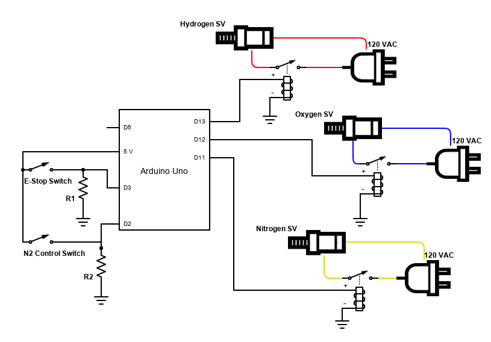

The solenoid valve timing and actuation used a separate Arduino Uno board. The reason for using a different Arduino board was because when both the data acquisition and valve timing and actuation programs were uploaded to the same board, the processes carried out by the latter program would interfere with the timing of the data acquisition sampling rate. When both programs were separated into different boards, the timing issues were resolved. The solenoid valves used run on 120V AC. The valves were accordingly powered by connecting to a standard 120V AC wall outlet plug. The circuit between the wall plug and each valve was open at a solid state relay. The other side of the solid state relay received direct current signals up to 5V , so one lead was connected to a digital output pin on the Arduino board, and the other lead was connected to ground. The digital pins were then programmed to output a high signal and therefore close the relay on the AC voltage side and thus turn on and open the solenoid valve, at specific points in time.
Two additional digital pins were set as input pins and used to add manual operation capabilities. Each pin was tied to ground via a resistor and connected to the 5V supply across a switch. The first feature added was an emergency stop switch (E-Stop). When digital pin ‘D2’ was shorted to the 5V input (closing the E-Stop) switch, the high signal would cause the program to immediately cut any valve actuation signals coming from the output digital pins (‘D11’, ‘D12’, and ‘D13’), thereby closing all valves. Shortly after, a signal would be sent to open the nitrogen valve. This way, all propellants would stop flowing into the combustion chamber and Nitrogen would flow into the combustion chamber to stop the combustion and quench any remaining flames. The second feature added was manual operation of the Nitrogen-line solenoid valve. When the N2 Control Switch was closed, the 5V signal into digital pin ‘D3’ would cause the program to send a signal to open the Nitrogen valve. The valve could then be closed by opening the switch. This feature was only enabled when the program entered a “stand-by” mode. The program would enter the stand-by mode only after normal operation of the static firing sequence finished, or the E-Stop switch had been activated. Finally, the digital pin ‘D5’ on this board was programmed as an output and connected to the digital pin ‘D2’ of the data acquisition board. Shortly before the ignition event, the output pin would be set to high. This high signal would then be read by the digital pin on the instrumentation circuit Arduino board and trigger the microprocessor to start recording data. Both Arduino boards were also connected to the same ground to ensure the correct voltage potential was being written and read by both boards.
